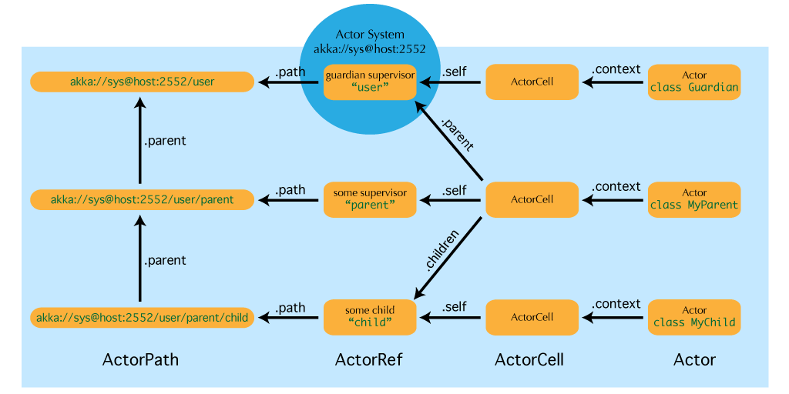
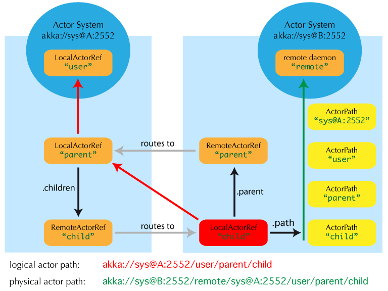

Actor引用，路径和地址
本节描述actor如何鉴别身份，在一个可能分布式的actor系统中如何定位。这与 Actor系统 的核心概念有关：固有的树形监管结构和在跨多个网络节点的actor之间进行透明通讯。
以上图片显示了actor系统中最重要的实体，请继续阅读了解详情。
Actor引用是什么？
Actor引用是 ActorRef 的子类，它的最重要功能是支持向它所代表的actor发送消息。每个actor通过self来访问它的标准（本地）引用，在发送给其它actor的消息中也缺省包含这个引用。反过来，在消息处理过程中，actor可以通过sender来访问到当前消息的发送者的引用。
根据actor系统的配置，支持几种不同的actor引用：
- 纯本地引用使用在配置为不使用网络功能的actor系统中。这些actor引用不能在保持其功能的条件下从网络连接上向外传输。
- 支持远程调用的本地引用使用在支持同一个jvm中actor引用之间的网络功能的actor系统中。为了在发送到其它网络节点后被识别，这些引用包含了协议和远程地址信息。
- 本地actor引用有一个子类是用在路由（routers， i.e. mixin 了 Router trait的actor）. 它的逻辑结构与之前的本地引用是一样的，但是向它们发送的消息会被直接重定向到它的子actor。
- 远程actor引用代表可以通过远程通讯访问的actor，i.e. 从别的jvm向他们发送消息时，Akka会透明地对消息进行序列化。
- 有几种特殊的actor引用类型，在实际用途中比较类似本地actor引用：
- PromiseActorRef 表示一个Promise，作用是从一个actor返回的响应来完成，它是由 ActorRef.ask 调用来创建的
- DeadLetterActorRef DeadLetterActorRef是死信服务的缺省实现，所有接收方被关闭或不存在的消息都在此被重新路由。
- EmptyLocalActorRef 是查找一个不存在的本地actor路径时返回的：它相当于DeadLetterActorRef，但是它保有其路径因此可以在网络上发送，以及与其它相同路径的存活的actor引用进行比较，其中一些存活的actor引用可能在该actor消失之前得到了。
- 然后有一些内部实现，你可能永远不会用上：
- 有一个actor引用并不表示任何actor，只是作为根actor的伪监管者存在，我们称它为“时空气泡穿梭者”。
- 在actor创建设施启动之前运行的第一个日志服务是一个伪actor引用，它接收日志事件并直接显示到标准输出上；它就是 Logging.StandardOutLogger。
- (未来扩展) Cluster actor references represent clustered actor services which may be replicated, migrated or load-balanced across multiple cluster nodes. As such they are virtual names which the cluster service translates into local or remote actor references as appropriate.
Actor路径是什么?
由于actor是以一种严格的树形结构样式来创建的，沿着子actor到父actor的监管链一直到actor系统的根存在一条唯一的actor名字序列。这个序列可以类比成文件系统中的文件路径，所以我们称它为“路径”。就象在一些真正的文件系统中一样，也存在所谓的“符号链接”，i.e. 一个actor可能通过不同的路径访问到，除了原始路径外，其它的路径都包含到actor实际的监管祖先链的转换方法。这些特性将在下面的内容中介绍。
一个actor路径包含一个标识该actor系统的锚点，之后是各路径元素连接起来，从根到指定的actor；路径元素是路径经过的actor的名字，以"/"分隔。
Actor路径锚点
每一条actor路径都有一个地址组件，描述如何访问到actor的协议和位置，之后是从根到actor所经过的树节点上actor的名字。例如：
"akka://my-system/user/service-a/worker1" // 纯本地
"akka://my-system@serv.example.com:5678/user/service-b" // 本地或远程
"cluster://my-cluster/service-c" // 集群 (未来扩展)
在这里, akka 是2.0版本中缺省的远程协议，其它的协议都是可插拔的。对主机和端口的理解（i.e. 上例中的serv.example.com:5678）决定于所使用的传输机制，
逻辑Actor路径
顺着actor的父监管链一直到根的唯一路径被称为逻辑actor路径。这个路径与actor的创建祖先完全吻合，所以当actor系统的远程调用配置（和配置中路径的地址部分）设置好后它就是完全确定的了。
物理Actor路径
逻辑Actor路径描述一个actor系统内部的功能位置，而基于配置的远程部署意味着一个actor可能在另外一台网络主机上被创建，i.e.在另一个actor系统中。在这种情况下，从根穿过actor路径肯定要访问网络，这是一个昂贵的操作。因此，每一个actor同时还有一条物理路径，从实际的actor对象所在的actor系统的根开始的。跟其它actor通信时使用物理路径作为发送方引用能够让接收方直接回复到这个actor上，将路由延迟降到最小。
一个重要的方面是物理路径决不会跨多个actor系统或跨虚拟机。这意味着一个actor的逻辑路径（监管树）和物理路径（actor部署）可能会分叉，如果它的祖先被远程监管了。
虚拟Actor路径 (未来扩展)
In order to be able to replicate and migrate actors across a cluster of Akka nodes, another level of indirection has to be introduced. The cluster component therefore provides a translation from virtual paths to physical paths which may change in reaction to node failures, cluster rebalancing, etc.
This area is still under active development, expect updates in this section for the 2.1 release.
如何获得Actor引用？
关于actor引用的获取方法分为两类：通过创建actor或者通过对actor的拜访查找。后一种功能又分两种：通过具体的actor路径来创建actor引用，和查询逻辑actor树。
虽然本地actor引用和远程actor引用的路径按下面提到的相同的方式工作，但真实的集群actor引用和路径的语义——虽然很相似——可能在某些方面存在不同，这与路径的虚拟性质有关。在2.1版 中会更新。
创建Actor
一个actor系统通常是在根actor上使用ActorSystem.actorOf创建actor，然后使用ActorContext.actorOf从创建出的actor中生出actor树来启动的。这些方法返回指向新创建的actor的引用。每个actor都拥有到它的父亲，它自己和它的子actor的引用。这些引用可以与消息一直发送给别的actor，以便接收方直接回复。
通过具体的路径来查找actor
另一种查找actor引用的途径是使用ActorSystem.actorFor方法，它会返回一个（未验证的）本地、远程或集群actor引用。向这个引用发送消息或试图观察它的存活状态会在actor系统树中从根开始一层一层从父向子actor发送消息，直到消息到达目标或是出现某种失败，i.e. 路径中的某一个actor名字不存在（在实际中这个过程会使用缓存来优化，但相较使用物理actor路径来说仍然增加了开销，因为物理路径能够从actor的响应消息中的发送方引用中获得），这个消息传递过程旧由Akka自动完成的，对客户端代码不可见。
绝对路径 vs 相对路径
除了ActorSystem.actorFor还有一个ActorContext.actorFor，这是在任何一个actor实例中可以用context.actorFor访问的。它所返回的actor引用与ActorSystem的返回值非常类似，但它的路径查找是从当前actor开始的，而不是从actor树的根开始。可以用 ".." 路径来访问父actor. 例如，你可以向一个兄弟发送消息：
context.actorFor("../brother") ! msg
当然绝对路径也可以在 context 中使用，i.e.
context.actorFor("/user/serviceA") ! msg
也能正确运行。
查询逻辑Actor树
由于actor系统是一个类似文件系统的树形结构，对actor的匹配与unix shell中支持的一样：你可以将路径（中的一部分）用通配符(«*» 和 «?»)替换来组成对0个或多个实际actor的匹配。由于匹配的结果不是一个单一的actor引用，它拥有一个不同的类型ActorSelection，这个类型不完全支持ActorRef的所有操作。同样，路径选择也可以用ActorSystem.actorSelection或ActorContext.actorSelection两种方式来获得，并且支持发送消息：
context.actorSelection("../*") ! msg
会将msg发送给包括当前actor在内的所有兄弟。对于用 actorFor 获取的actor引用，为了进行消息的发送，会对监管树进行遍历。由于在消息到达其接收者的过程中与查询条件匹配的actor集合会发生变化，要监视查询的实时变化是不可能的。如果要做这件事情，通过发送一个请求，收集所有的响应来解决不确定性，提取所有的发送方引用，然后监视所有发现的具体actor。这种处理actor选择的方式会在未来的版本中进行改进。
总结: actorOf vs. actorFor
Note
以上部分所描述的细节可以简要地总结和记忆成：
- actorOf 永远都只会创建一个新的actor，这个新的actor是actorOf所调用上下文（可以是actor系统中的任意一个actor）的直接子actor
- actorFor 永远都只是查找到一个已存在的actor，不会创建新的actor。
与远程部署之间的互操作
当一个actor创建一个子actor，actor系统的部署者会决定新的actor是在同一个jvm中或是在其它的节点上。如果是后者，actor的创建会通过网络连接来到另一个jvm中进行，结果是新的actor会进入另一个actor系统。远程系统会将新的actor放在一个专为这种场景所保留的特殊路径下。新的actor的监管者会是一个远程actor引用（代表会触发创建动作的actor）。这时，context.parent（监管者引用）和context.path.parent（actor路径上的父actor）表示的actor是不同的。但是在其监管者中查找这个actor的名称能够在远程节点上找到它，保持其逻辑结构，e.g. 当向另外一个未确定(unresolved)的actor引用发送消息时。
与集群的互操作 (未来扩展)
本部分会变化!
When creating a scaled-out actor subtree, a cluster name is created for a routed actor reference, where sending to this reference will send to one (or more) of the actual actors created in the cluster. In order for those actors to be able to query other actors while processing their messages, their sender reference must be unique for each of the replicas, which means that physical paths will be used as self references for these instances. In the case of replication for achieving fault-tolerance the opposite is required: the self reference will be a virtual (cluster) path so that in case of migration or fail-over communication is resumed with the fresh instance.
路径中的地址部分用来做什么？
在网络上传送actor引用时，是用它的路径来表示这个actor的。所以，它的路径必须包括能够用来向它所代表的actor发送消息的完整的信息。这一点是通过在路径字符串的地址部分包括协议、主机名和端口来做到的。当actor系统从远程节点接收到一个actor路径，会检查它的地址部分是否与自己的地址相同，如果相同，那么会将这条路径解析为本地actor引用，否则解析为一个远程actor引用。
Akka使用的特殊路径
在路径树的根上是根监管者，所有的的actor都可以从通过它找到。在第二个层次上是以下这些：
- "/user" 是所有由用户创建的顶级actor的监管者，用 ActorSystem.actorOf 创建的actor在其下一个层次 are found at the next level.
- "/system" 是所有由系统创建的顶级actor（如日志监听器或由配置指定在actor系统启动时自动部署的actor）的监管者
- "/deadLetters" 是死信actor，所有发往已经终止或不存在的actor的消息会被送到这里
- "/temp" 是所有系统创建的短时actor(i.e.那些用在ActorRef.ask的实现中的actor)的监管者.
- "/remote" 是一个人造的路径，用来存放所有其监管者是远程actor引用的actor
目录